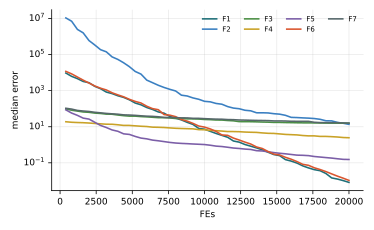

Chương 13 · Mục 13.2Chapter 13 · Section 13.2
Tìm kiếm chim cúc cuCuckoo SearchCuckoo Search — CSCS — brood parasitism with Lévy flights
Châu Văn Vân · PTITHCM
Mục tiêu bài họcLearning objectives
Sau chương này, bạn có thểAfter this chapter you will be able to
- Mô tả tập tính đẻ trứng ký sinh của chim cúc cu và ba quy tắc lý tưởng hóa.Describe cuckoo brood parasitism and the three idealized rules.
- Viết bước Lévy để tạo trứng mới và bước bỏ tổ với xác suất pa.Write the Lévy step for new eggs and the nest-abandonment step with probability pa.
- Sinh bước Lévy bằng thuật toán Mantegna (chương 2).Generate Lévy steps with Mantegna's algorithm (chapter 2).
- Đọc kết quả thực nghiệm và hiểu vì sao CS hội tụ chậm ở ngân sách nhỏ.Read the experiments and see why CS converges slowly on small budgets.
Tổng quanOverview
Chim cúc cu đẻ nhờ vào tổ chim khácCuckoos lay eggs in other birds' nests
- Do Xin-She Yang và Suash Deb đề xuất năm 2009 (NaBIC 2009).Proposed by Xin-She Yang and Suash Deb in 2009 (NaBIC 2009).
- Nhiều loài cúc cu đẻ trứng vào tổ của loài chim khác; trứng có thể giống trứng của chủ tổ.Many cuckoo species lay eggs in other birds' nests; the eggs may mimic the host's.
- Nếu chủ tổ phát hiện trứng lạ, nó vứt trứng hoặc bỏ tổ để làm tổ mới.If the host spots an alien egg, it throws it out or abandons the nest to build a new one.
- Đường bay tìm tổ của nhiều loài động vật có dạng bước Lévy: nhiều bước ngắn, thỉnh thoảng một bước rất dài.Many animals search along Lévy flights: many short steps with the occasional very long one.
Ý tưởng cốt lõiCore idea
Mỗi con cúc cu bay kiểu Lévy rồi đẻ một trứng vào một tổ ngẫu nhiên; trứng tốt hơn thì thay trứng cũ. Một phần pa số tổ bị chủ phát hiện và làm lại.Each cuckoo flies along a Lévy path and lays one egg in a random nest; a better egg replaces the old one. A fraction pa of nests are discovered and rebuilt.
Các thành phầnComponents
Tổ, trứng và bước LévyNests, eggs and Lévy steps
- TổNestTổNest
- Một lời giải xiA solution xi
- Trứng mớiNew eggTrứng mớiNew egg
- Lời giải tạo bằng bước LévyA solution built by a Lévy step
- Phát hiệnDiscoveryPhát hiệnDiscovery
- Mỗi chiều bị đổi với xác suất paEach dimension changed with probability pa
Bước LévyLévy step
L(s) ~ s−1−β, β = 1.5Chi phíCost
2n lần đánh giá / vòng2n evaluations / iterationCác bướcSteps
Các bước của CSCS step by step
Hai bước, mỗi bước đánh giá cả quần thể.Two steps, each evaluating the whole population.
- Khởi tạo n tổ ngẫu nhiên.Initialize n random nests.
- Mỗi cúc cu bay Lévy từ tổ của nó, tạo trứng mới.Each cuckoo flies a Lévy step from its nest, making a new egg.
- Giữ trứng mới nếu tốt hơn trứng trong tổ.Keep the new egg if it beats the one in the nest.
- Phát hiện: với xác suất pa, đổi chiều đó bằng bước vi phân ngẫu nhiên.Discovery: with probability pa, change that dimension by a random differential step.
- Giữ tổ mới nếu tốt hơn; ghi nhận tổ tốt nhất; lặp lại.Keep the rebuilt nest if better; record the best; repeat.
2 – 5 vòng lặp chínhmain loop
Thuật toánAlgorithm
Lưu đồFlowchart
Mô hình toán họcMathematical model
Trứng mới bằng bước LévyNew eggs by Lévy steps
- Dòng thứ hai là cách mã minh họa của Yang & Deb chọn α: bước tỉ lệ với khoảng cách tới tổ tốt nhất.The second line is how Yang & Deb's demo code sets α: steps scale with the distance to the best nest.
- σ tính bằng hàm Gamma theo thuật toán Mantegna (chương 2).σ comes from the Gamma function via Mantegna's algorithm (chapter 2).
- Tổ tốt nhất có xi − xbest = 0 nên đứng yên ở bước này.The best nest has xi − xbest = 0, so it stays put in this step.
Mô hình toán họcMathematical model
Một phần tổ bị phát hiện và làm lạiA fraction of nests are discovered and rebuilt
- p1, p2: hai hoán vị ngẫu nhiên của các tổ; r ~ U(0, 1).p1, p2: two random permutations of the nests; r ~ U(0, 1).
- Đây là cách mã của Yang & Deb hiện thực “làm tổ mới”: một bước vi phân giống DE.This is how Yang & Deb's code realizes “building a new nest”: a DE-like differential step.
- Sau mỗi bước, chỉ nhận tổ mới khi tốt hơn (chọn tham lam).After each step, a new nest is kept only if better (greedy selection).
Tham sốParameters
Tham số của CSCS parameters
| Tham sốParameter | Ý nghĩaMeaning | Giá trị thường dùngTypical value |
|---|---|---|
| n | Số tổNumber of nests | 15 – 25 |
| pa | Tỉ lệ bị phát hiệnDiscovery rate | 0.25 |
| β | Số mũ LévyLévy exponent | 1.5 |
| α0 | Hệ số bướcStep scale | 0.01 |
Chỉ hai tham số cần chọn: n và pa. Yang & Deb nhận thấy kết quả ít nhạy với pa.Only two parameters: n and pa. Yang & Deb found results insensitive to pa.
Mô phỏngSimulation
15 tổ trên địa hình chung15 nests on the shared landscape
Vệt cam là bước Lévy vừa được nhận; vệt xanh là tổ vừa được làm lại. Để ý thỉnh thoảng có một bước rất dài.Orange trails are accepted Lévy steps; blue ones rebuilt nests. Watch for the occasional very long jump.
Theo mã của Yang & Deb: pa = 0.25, bước 0.01.As in Yang & Deb's code: pa = 0.25, step 0.01.
Ví dụ tính tayWorked example
Một trứng Lévy và một lần làm tổOne Lévy egg and one rebuilt nest
- Bước Lévy: 0.01 · L ⊗ (x − xbest) ⊗ N = 0.01 · (0.4·1·1, −1.2·2·0.5) = (0.004, −0.012).Lévy step: 0.01 · L ⊗ (x − xbest) ⊗ N = 0.01 · (0.4·1·1, −1.2·2·0.5) = (0.004, −0.012).
- Trứng mới: (2.004, 2.988); giữ nếu tốt hơn.New egg: (2.004, 2.988); kept if better.
Làm lại tổRebuilding
- K = (1, 0) (chỉ chiều 1 bị đổi), r = 0.6, xp1 − xp2 = (3, −1).K = (1, 0) (only dim 1 changes), r = 0.6, xp1 − xp2 = (3, −1).
- Tổ mới: (2 + 0.6·3, 3) = (3.8, 3).New nest: (2 + 0.6·3, 3) = (3.8, 3).
- Bước Lévy ở đây rất ngắn vì hệ số 0.01; bước dài chỉ xuất hiện khi |L| rất lớn.The Lévy step is tiny because of the 0.01 factor; long jumps appear only when |L| is very large.
Các biến thểVariants
Hướng cải tiếnDirections of improvement
CS cải tiếnModified CS
Cho α giảm theo thế hệ và trao đổi thông tin giữa tổ tốt (Walton và cs., 2011).Decrease α over generations and exchange information among top nests (Walton et al., 2011).
CS đa mục tiêuMulti-objective CS
Yang & Deb (2013) mở rộng cho nhiều mục tiêu.Yang & Deb (2013) extended it to many objectives.
CS nhị phânBinary CS
Hàm chuyển S/V cho bài toán 0/1.S/V transfer functions for 0/1 problems.
CS laiHybrid CS
Kết hợp với PSO hoặc DE.Combined with PSO or DE.
Ứng dụngApplications
Ứng dụng của CSCS applications
CS được dùng rộng rãi nhờ ít tham số và bước Lévy khám phá tốt.CS is widely used thanks to few parameters and exploratory Lévy steps.
Thiết kế kỹ thuậtEngineering design
Lò xo, dầm hàn (Yang & Deb, 2010).Springs, welded beams (Yang & Deb, 2010).
Lập lịchScheduling
Lập lịch công việc, flow shop.Job and flow-shop scheduling.
Xử lý ảnhImage processing
Phân ngưỡng đa mức.Multilevel thresholding.
Học máyMachine learning
Huấn luyện mạng, chọn đặc trưng.Network training, feature selection.
Thực nghiệm · CSExperiment · CS
Kết quả trên bộ 7 hàm, D = 10, 30 lần chạyResults on the 7-function suite, D = 10, 30 runs
| HàmFunction | Trung bìnhMean | Độ lệchStd | Trung vịMedian | so PSOvs PSO |
|---|---|---|---|---|
| F1 · Sphere | 9.56e−3 | 4.65e−3 | 8.23e−3 | − |
| F2 · Rosenbrock | 1.92e+1 | 1.16e+1 | 1.35e+1 | − |
| F3 · Rastrigin | 1.52e+1 | 3.27e+0 | 1.57e+1 | − |
| F4 · Ackley | 2.50e+0 | 7.32e−1 | 2.45e+0 | − |
| F5 · Griewank | 1.55e−1 | 3.65e−2 | 1.53e−1 | − |
| F6 · Shifted Sphere | 1.33e−2 | 1.02e−2 | 1.06e−2 | − |
| F7 · Shifted Rastrigin | 1.71e+1 | 4.72e+0 | 1.59e+1 | − |
- Sai số f(xbest) − f* sau 20 000 lần đánh giá; n = 30; tham số mặc định của bài gốc; giá trị < 10−8 ghi là 0.Error f(xbest) − f* after 20,000 evaluations; n = 30; default parameters of the original paper; values < 10−8 shown as 0.
- Cột cuối: Wilcoxon rank-sum với PSO (α = 0.05): + tốt hơn, − kém hơn, ≈ không khác biệt.Last column: Wilcoxon rank-sum vs PSO (α = 0.05): + better, − worse, ≈ no difference.
- Xếp hạng Friedman trung bình: 12.14, đứng thứ 14/18 trong 18 thuật toán của giáo trình.Average Friedman rank: 12.14, position 14/18 among the textbook’s 18 algorithms.
- Với hệ số bước 0.01, CS tiến chậm: thứ hạng Friedman 12.14, kém PSO trên cả 7 hàm ở ngân sách 20 000 lần đánh giá.With the 0.01 step factor CS progresses slowly: Friedman rank 12.14, worse than PSO on all 7 functions within 20,000 evaluations.
Thực nghiệm · CSExperiment · CS
Đường hội tụ (trung vị 30 lần chạy)Convergence (median of 30 runs)

Mã nguồnSource code
Mã nguồn PythonPython source code
Đoạn trích phần cập nhật chính; tệp đầy đủ có chú thích và tham số mặc định theo bài gốc.Excerpt of the main update; the full file documents the default parameters of the original paper. code/si/algorithms/cs.py
while not prob.done: best = prob.best_x.copy() Y = X + 0.01 * levy(rng, X.shape) * (X - best) * rng.normal(size=X.shape) Y = prob.clip(Y); fy = prob(Y) keep = fy < fx; X[keep], fx[keep] = Y[keep], fy[keep] K = rng.random(X.shape) > pa Y = X + rng.random() * (X[rng.permutation(n)] - X[rng.permutation(n)]) * K Y = prob.clip(Y); fy = prob(Y) keep = fy < fx; X[keep], fx[keep] = Y[keep], fy[keep] return prob.best_x, prob.best_f
Chạy lại toàn bộ thực nghiệm: python -m experiments.run_continuous trong thư mục code/ (xem PROTOCOL.md).Reproduce all experiments: python -m experiments.run_continuous inside code/ (see PROTOCOL.md).
Đánh giáAssessment
Ít tham số, khám phá tốt, khai thác chậmFew parameters, good exploration, slow exploitation
Điểm mạnhStrengths
- Chỉ hai tham số n, pa; ít nhạy.Only two parameters n, pa; low sensitivity.
- Bước Lévy cho cả bước ngắn lẫn bước nhảy xa.Lévy steps give both short moves and long jumps.
- Chọn tham lam giữ lời giải tốt.Greedy selection keeps good solutions.
Hạn chế và biến thểLimitations and variants
- Hệ số 0.01 làm khai thác chậm; với ngân sách nhỏ, CS kém PSO trên mọi hàm của bộ thử.The 0.01 factor slows exploitation; on a small budget CS loses to PSO on every test function.
- Mỗi vòng tốn 2n lần đánh giá.Each iteration costs 2n evaluations.
- Kết quả phụ thuộc nhiều vào cách chọn α trong cài đặt.Results depend strongly on how α is set in the implementation.
Bài tập và thực hànhExercises and labs
Luyện tập: tính tay rồi lập trìnhPractice: by hand, then in code
Bài tập lý thuyếtTheory exercises
- Tính σ của thuật toán Mantegna với β = 1.5.Compute Mantegna's σ for β = 1.5.
- Lặp lại ví dụ tính tay với L = (3, 0.1).Redo the worked example with L = (3, 0.1).
- Kỳ vọng có bao nhiêu chiều bị đổi trong bước bỏ tổ khi D = 10, pa = 0.25?How many dimensions change on average in the abandonment step with D = 10, pa = 0.25?
Thực hành Python / MATLABPython / MATLAB labs
- Thay 0.01 bằng 0.1 và 1; đo trên F1, F3.Replace 0.01 by 0.1 and 1; measure on F1, F3.
- Khảo sát pa ∈ {0.1, 0.25, 0.5}.Study pa ∈ {0.1, 0.25, 0.5}.
- Cài CS cải tiến của Walton và so sánh.Implement Walton's modified CS and compare.
Tài liệu tham khảoReferences
Đọc thêm: các bài báo gốcFurther reading: the original papers
- K. M. Passino, “Biomimicry of bacterial foraging for distributed optimization and control,” IEEE Control Syst., vol. 22, no. 3, pp. 52–67, 2002, doi: 10.1109/MCS.2002.1004010.
- X.-S. Yang and S. Deb, “Cuckoo Search via Lévy flights,” in 2009 World Congress on Nature & Biologically Inspired Computing (NaBIC), 2009, pp. 210–214, doi: 10.1109/NABIC.2009.5393690.
- X. S. Yang and S. Deb, “Engineering optimisation by cuckoo search,” IJMMNO, vol. 1, no. 4, pp. 330, 2010, doi: 10.1504/IJMMNO.2010.035430.
Tóm lạiIn short
Cảm ơn các bạn đã theo dõiThank you for your attention
Châu Văn Vân · PTITHCM · Tài liệu gốc: Yang & Deb, NaBIC 2009Original paper: Yang & Deb, NaBIC 2009